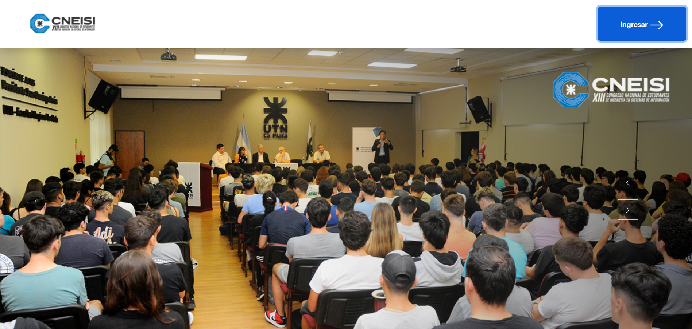
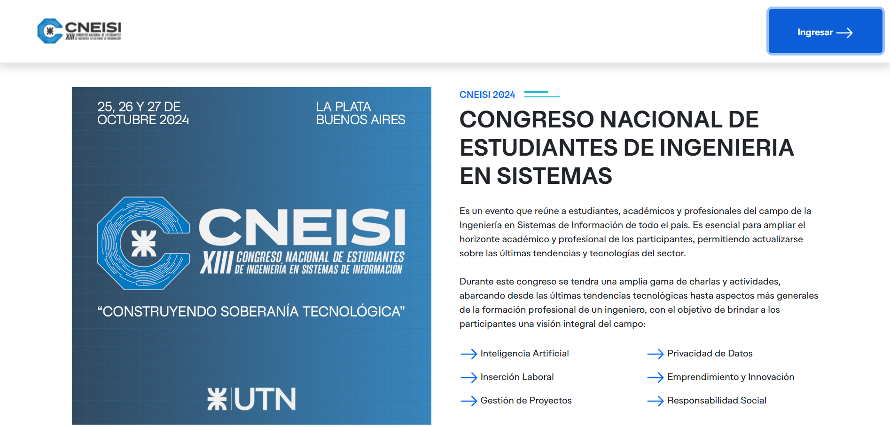
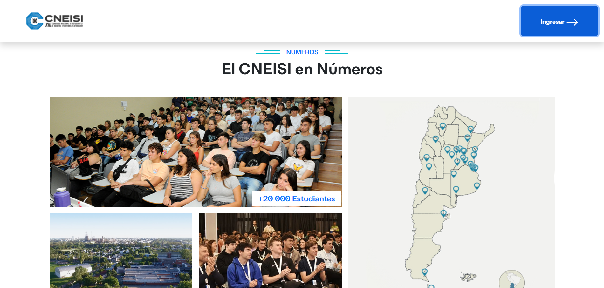
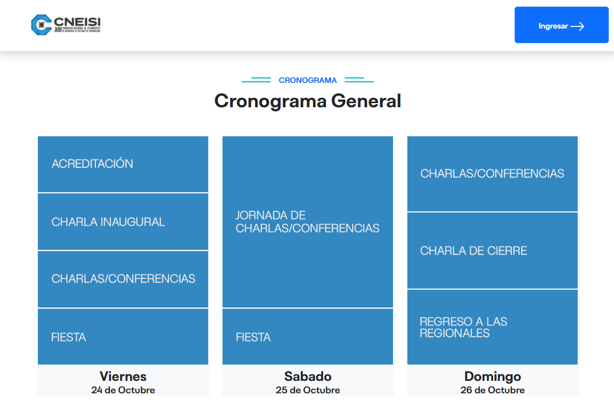

Plataforma de inscripción y promoción del congreso de estudiantes de ingeniería en sistemas de información de todas las UTN Regionales de la Argentina
Nombre del proyecto: Congreso Nacional de Estudiantes de Ingenieria en Sistemas de Información (CNEISI 2024)
Descripción: Plataforma de inscripción y promoción del congreso de estudiantes de ingeniería en sistemas de información de todas las UTN Regionales de la Argentina.
Tipo: Proyecto Institucional y de Extensión Universitaria (Secretaría de Asuntos Universitarios UTN FRLP)
Rol: Desarrollador Full-Stack
Fecha: Septiembre - Octubre 2024
Tecnologías Usadas: Python (Django), Mysql, HTML, CSS y Js
Colaboradores: Juan Manuel Semper
Ver códigoEl proyecto consistió en modificar la infraestructura digital existente para el Congreso Nacional de Estudiantes de Ingeniería en Sistemas de Información (CNEISI). El desafío principal fue optimizar y extender el backend de administración para que el personal Staff pudiera gestionar de manera eficiente la logística del evento, las inscripciones de los asistentes y el control de cupos en tiempo real para las actividades.
Enfoque se centró en la extensión y seguridad del backend del sistema, desarrollado en Django. El proceso incluyó la modificación de las funciones de administración de usuarios Staff, implementando la lógica para habilitar o deshabilitar inscripciones globales. Además, desarrollé el mecanismo de carga de actividades con control estricto de cupos por charla, y modifiqué las vistas para permitir la carga manual de datos de asistentes por parte de los coordinadores para la creación masiva de cuentas.
Implementé y modifiqué el sistema de gestión del CNEISI, centrándome en las funcionalidades del backend y la interfaz administrativa. La solución automatizó:
Administración completa de permisos y roles para el personal organizador del congreso.
Sistema automático para limitar inscripciones por actividad en tiempo real, evitando sobrecupos.
ABM especializado para charlas y talleres con asignación dinámica de disertantes y horarios.
Herramientas avanzadas para la importación y validación de listas de asistentes desde fuentes externas.
Gestión eficiente de miles de asistentes
Control de acceso robusto
Reducción de carga manual



